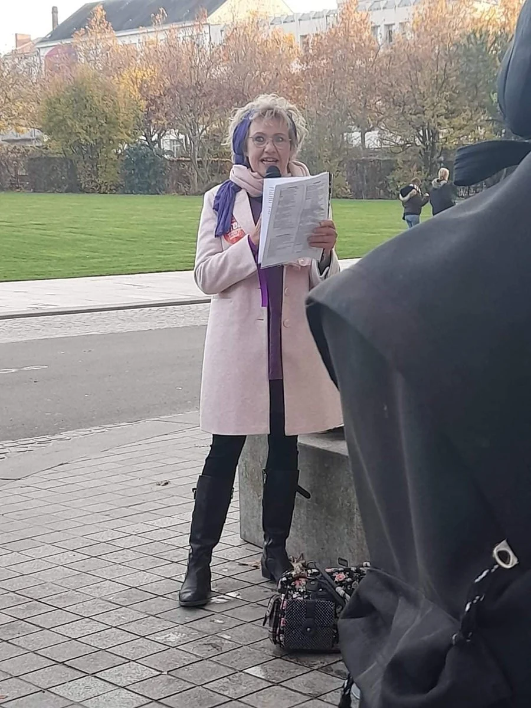

Publication sur X
À Niort, une marche contre les violences sexistes et sexuelles
Date de publication sur X · 25 novembre 2021
Repères éditoriaux
Nous nous sommes associés à la mobilisation. Le compte rendu Facebook donne la date de la marche, le 20 novembre 2021. Le message sur X a été publié le 25 novembre.
Texte de la publication sur X
Niort - Plusieurs centaines de manifestant.e.s à la marche contre les violences sexistes et sexuelles
La fédération des Deux-Sèvres du Parti Communiste Français s’associe au mouvement « Nous Toutes » en ce 20 novembre 2021. https://t.co/SeTtk4je5d

Sources
PCF 79 · @79Parti sur X · AR-0005-TW-1463778572460601352
À lire aussi · À Niort, appel à se rassembler en mémoire de Lyhanna et en soutien aux victimes
Publications associées
- À Niort, plusieurs centaines de personnes contre les violences sexistes et sexuelles · Compte rendu Facebook de la marche de Niort
- 20 novembre à Niort. Marcher contre les violences sexistes et sexuelles · Appel Facebook à la marche